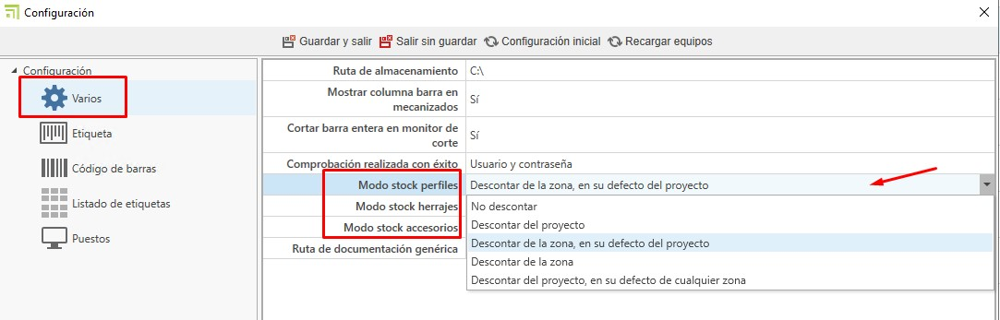
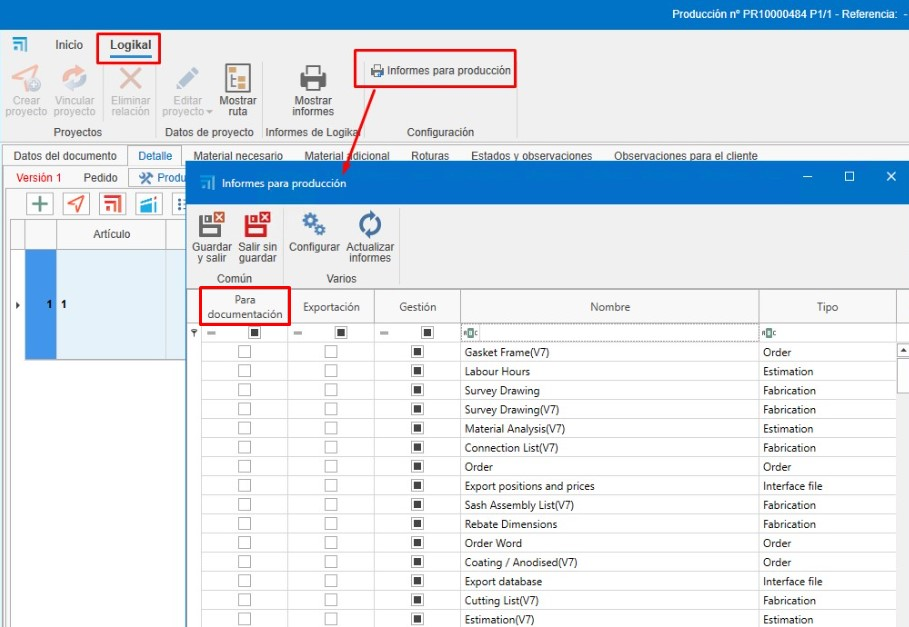

2. Configuración Inicial de enCONTROL
Índice
- Propósito
- Configuración General
- 2.1. Puestos
- 2.2. Varios
- Configuración de Producción en ENBLAU
- 3.1. Clasificaciones de Producción
- 3.2. Informes de Producción Logikal
- 3.3. Información Adicional
- Conclusión
1. Propósito
El presente manual está diseñado para guiar a los nuevos usuarios en la configuración inicial de enCONTROL. Esta configuración incluye todo lo necesario para poner en marcha la producción.
2. Configuración en enCONTROL
Acceder a la configuración de enCONTROL (F10). Este proceso puede tardar un poco debido a la cantidad de puestos que haya que conectar en red.
2.1. Puestos
- En "Puestos" definirás los equipos asociados para cada puesto.

2.2. Varios
- Se define el modo en que se descontará del stock los perfiles, herrajes y accesorios según avanza la producción.

- **No descontar**: No se descuenta de ningún sitio.
- **Descontar del proyecto**: Se descuenta solo del proyecto, independientemente de la zona.
- **Descontar de la zona, en su defecto del proyecto**: Se descuenta de la zona indicada y del proyecto.
- **Descontar de la zona**: Solo se descuenta de la zona indicada, independientemente del proyecto.
- **Descontar del proyecto, en su defecto de cualquier zona**: Se descuenta del proyecto y de cualquier zona.
- En "Ruta de documentación genérica" puedes indicar documentaciones como información del sistema, entre otros, que se pueda ver desde enCONTROL y los puestos.

Ejemplo en un puesto:

3. Configuración de Producción en ENBLAU
3.1. Clasificaciones de Producción
Las clasificaciones en producción se usan de manera informativa al crear una producción para que se refleje en las líneas del puesto en enCONTROL.
- Accede al apartado de Ventas - Configuración - Clasificaciones.

- Desde "Clasificaciones", crea las clasificaciones que sean necesarias e indica la línea y los puestos de enCONTROL.
- Al crear una producción desde un pedido de venta, verás que hay un desplegable de clasificaciones donde puedes indicar la clasificación para esa producción.

3.2. Informes de Producción Logikal
Informes que se requieran y que se generan automáticamente, guardándose como documentación de Logikal en producción. Estos documentos se verán en la ruta de documentación en los puestos de enCONTROL.
- En el presupuesto (producción), accede al apartado de Logikal - Informes para producción. Desde allí, marca los informes que quieras que se guarden en producción como documentación en la columna Para documentación.

Nota: Para el tema de la documentación, no cambies nada en las columnas Exportación y Gestión.
3.3. Información Adicional
La información adicional es un campo informativo para cuando la producción pase a cola de taller en enCONTROL, de modo que el responsable de taller pueda consultarla.
- Accede al apartado de Ventas - Configuración - Información adicional producción.

- Desde "Información adicional producción", crea las informaciones adicionales que sean necesarias.

- Al crear una producción desde un pedido de venta, verás que hay un desplegable de información adicional donde puedes indicar cómo quieres que llegue esa información a la cola de producción.


4. Conclusión
Siguiendo este manual, podrás realizar una configuración inicial de enCONTROL para el uso en la creación de producción.